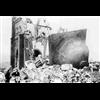

<!DOCTYPE html>
<html lang="en">
 <head>
<!-- Favicon -->
<link rel="shortcut icon" href="../../favicon.ico">
  <meta charset="utf-8"/>
  <title>
   What couldn't be done in 250 years of persecution, the (((US))) did in seconds. Hiroshima held the largest number of Christians. Nagasaki Ground Zero over Largest Christian Structure in Asia-Pacific.
  </title>
  <meta content="Post on /v/Conspiracy from 2018-04-30 by mememeyou." name="description"/>
  <meta content="What couldn't be done in 250 years of persecution, the (((US))) did in seconds. Hiroshima held the largest number of Christians. Nagasaki Ground Zero over Largest Christian Structure in Asia-Pacific." property="og:title"/>
  <meta content="Post on /v/Conspiracy from 2018-04-30 by mememeyou." property="og:description"/>
  <link href="../../static/css/page.css" rel="stylesheet"/>
  <meta content="https://voat.conspiracy.hackliberty.org/thumbnails/e4/8e/e48e86af-3993-4e5e-98bf-1f5accb4c951.jpg" property="og:image"/>
  <meta content="https://voat.conspiracy.hackliberty.org/v/conspiracy/2523053.html" property="og:url"/>
  <meta content="width=device-width, initial-scale=1" name="viewport"/>
  <link href="https://voat.conspiracy.hackliberty.org/v/conspiracy/2523053.html" rel="canonical"/>
  <meta content="article" property="og:type"/>
  <meta content="Voat /v/Conspiracy Archive" property="og:site_name"/>
  <meta content="en_US" property="og:locale"/>
  <meta content="summary_large_image" name="twitter:card"/>
  <meta content="What couldn't be done in 250 years of persecution, the (((US))) did in seconds. Hiroshima held the largest number of Christians. Nagasaki Ground Zero over Largest Christian Structure in Asia-Pacific." name="twitter:title"/>
  <meta content="Post on /v/Conspiracy from 2018-04-30 by mememeyou." name="twitter:description"/>
  <meta content="https://voat.conspiracy.hackliberty.org/thumbnails/e4/8e/e48e86af-3993-4e5e-98bf-1f5accb4c951.jpg" name="twitter:image"/>
 </head>
</html>
<body class="dark">
 <div id="container">
  <!-- array (
  'submissionid' => 2523053,
  'creationDate' => '2018-04-30 03:15:47',
  'domain' => 'wikipedia.org',
  'formattedContent' => NULL,
  'isAdult' => 0,
  'isAnonymized' => 0,
  'subverse' => 'Conspiracy',
  'thumbnail' => 'e48e86af-3993-4e5e-98bf-1f5accb4c951.jpg',
  'title' => 'What couldn\'t be done in 250 years of persecution, the (((US))) did in seconds. Hiroshima held the largest number of Christians. Nagasaki Ground Zero over Largest Christian Structure in Asia-Pacific.',
  'url' => 'https://en.wikipedia.org/wiki/Urakami',
  'userName' => 'mememeyou',
  'archivedLink' => NULL,
  'archivedDomain' => NULL,
  'isDeleted' => 0,
) -->
  <div style="text-align:center; font-size:24px; font-weight:bold;">
   <a href="../../index.html" style="text-decoration: none; color: inherit;">
    Voat /v/Conspiracy Archive
   </a>
  </div>
  <div class="content" role="main">
   <div class="sitetable linklisting" id="siteTable">
    <div class="submission id-2523053 link type-text" id="submission-2523053">
     <a name="submissionTop">
     </a>
     <p class="parent">
     </p>
     <a class="thumbnail may-blank" href="https://en.wikipedia.org/wiki/Urakami" target="_self">
      
     </a>
     <div class="entry unvoted">
      <p class="title">
       <a class="title may-blank" href="https://en.wikipedia.org/wiki/Urakami" tabindex="1" target="_self" title="What couldn't be done in 250 years of persecution, the (((US))) did in seconds. Hiroshima held the largest number of Christians. Nagasaki Ground Zero over Largest Christian Structure in Asia-Pacific.">
        What couldn't be done in 250 years of persecution, the (((US))) did in seconds. Hiroshima held the largest number of Christians. Nagasaki Ground Zero over Largest Christian Structure in Asia-Pacific.
       </a>
       <span class="domain">
        (
        <a href="https://archive.searchvoat.co/search.php?d=wikipedia.org">
         wikipedia.org
        </a>
        )
       </span>
      </p>
      <p class="tagline">
       submitted
       <time datetime="2018-04-30T03:15:47+00:00" title="04/30/2018 3:15:47 AM">
        2018-04-30T03:15
       </time>
       by
       <span class="userattrs">
        <a class="author may-blank" href="https://archive.searchvoat.co/search.php?u=mememeyou">
         mememeyou
        </a>
       </span>
      </p>
      <ul class="flat-list buttons">
       <li class="first">
        <a class="comments may-blank" href="https://archive.searchvoat.co/v/Conspiracy/2523053" rel="nofollow">
         2 comments
        </a>
       </li>
      </ul>
     </div>
     <div class="child">
     </div>
     <div class="clearleft">
     </div>
    </div>
    <div class="clearleft">
    </div>
   </div>
   <div class="horizontal-line">
   </div>
   <div class="commentarea">
    <div class="sitetable nestedlisting" id="siteTable">
     <div class="child id-12627797 comment even" style="">
      <div class="entry unvoted">
       <div class="noncollapsed" id="12627797" style=";">
        <p class="tagline">
         <a class="author may-blank" href="https://archive.searchvoat.co/search.php?u=RvBMan">
          RvBMan
         </a>
         <span class="userattrs">
         </span>
         <time datetime="2018-04-30T08:38:36+00:00" title="4/30/2018 8:38:36 AM">
          2018-04-30T08:38
         </time>
        </p>
        <div class="usertext-body may-blank-within" id="commentContent-12627797">
         <div class="md">
          <p>
           <p>
            Holy shit, how much of there is this!?!
           </p>
           <p>
            I can’t comprehend how far humanity would have come if Jews and muslisms didn’t exist.
           </p>
          </p>
         </div>
        </div>
        <ul class="flat-list buttons">
         <li class="first">
          <a class="bylink" href="https://archive.searchvoat.co/v/Conspiracy/2523053/12627797" rel="nofollow">
           link
          </a>
         </li>
        </ul>
       </div>
      </div>
     </div>
     <div class="child id-12626553 comment even" style="">
      <div class="entry unvoted">
       <div class="noncollapsed" id="12626553" style=";">
        <p class="tagline">
         <a class="author may-blank" href="https://archive.searchvoat.co/search.php?u=mememeyou">
          mememeyou
         </a>
         <span class="userattrs">
         </span>
         <time datetime="2018-04-30T04:16:34+00:00" title="4/30/2018 4:16:34 AM">
          2018-04-30T04:16
         </time>
        </p>
        <div class="usertext-body may-blank-within" id="commentContent-12626553">
         <div class="md">
          <p>
           <p>
            <a href="https://consortiumnews.com/2015/08/09/christianity-and-the-nagasaki-crime/">
             https://consortiumnews.com/2015/08/09/christianity-and-the-nagasaki-crime/
            </a>
           </p>
          </p>
         </div>
        </div>
        <ul class="flat-list buttons">
         <li class="first">
          <a class="bylink" href="https://archive.searchvoat.co/v/Conspiracy/2523053/12626553" rel="nofollow">
           link
          </a>
         </li>
        </ul>
       </div>
      </div>
     </div>
    </div>
   </div>
  </div>
 </div>
<!-- Footer Section -->
<footer class="container-fluid mt-3">
  <p class="small mb-0">
    /v/conspiracy archive has 42504 posts and 159856 total comments.
    <a href="https://git.hackliberty.org/c0mmando/voat-conspiracy-archive/">source code</a>.
  </p>
</footer>

<script src="../../static/js/jquery-3.7.1.slim.min.js"></script>
<script src="../../static/js/comments-toggle.js"></script>

</body>
